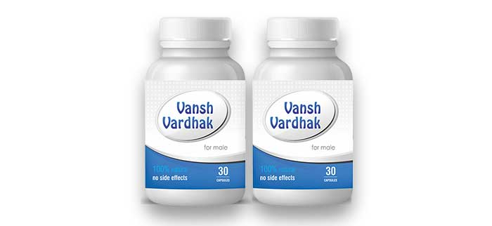
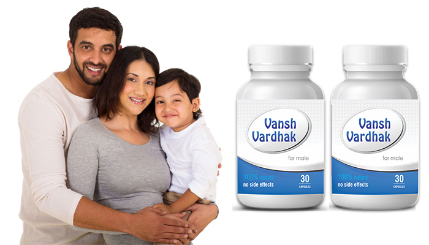

आज बांझपन की समस्या हमारे देश मे लगातार बढ़ती जा रही है। कुछ साल पहले बांझपन की अधिकतर समस्याए महिलाओ मे पायी जाती थी लेकिन आज infertility के Cases मे 40% समस्याए पुरुषो की तरफ से पायी जा रही है। पुरुषो मे अधिकतर समस्या कम शुक्राणु, नील शुक्राणु या फिर शुक्राणु की Motality को लेकर पायी जा रही है।
Vanshvardhak For Male पुरुषो मे बांझपन की इन मुख्य समस्याओ मे है लाभदायक:-
- शुक्राणुओ का ना बनना या फिर कम बनना
- हार्मोनल प्रॉब्लम का होना
- शुक्राणुओ का कम motile होना
- वीर्य का पतला होना |
- टेस्टिस में इन्फेक्शन
यह सब बांझपन की समस्या के मुख्य कारण है जो की पुरुषो मे पाये जाते है और Vanshvardhak For Male दवा इन सभी समस्याओ के लिये एक रामबाण ईलाज है।
ऑर्डर करें
Vanshvardhak for male मे बांझपन की इन सभी समयाओ का है एक रामबाण ईलाज।
- अंडो का कम बनना या फिर समय पर नहीं बनना या फूटना|
- अन्डेदानी में रसोली का होना |
- गर्भ का बार- बार गिरना या ना ठहरना |
- PCOD/PCOS (अन्डेदानी में पानी वाली रसोली का होना) |
- हार्मोनल प्रॉब्लम का होना|
- मासिक धर्म समय पर नहीं आना या फिर बिलकुल ही नहीं आना |
- Fallopian tubes मे किसी प्रकार की रुकावट का होना या बंद होना |
आयुर्वेद के अनुसार गर्भधारण की प्रक्रिया स्त्री और पुरुष दोनों मे ही शुकर्धतु से सम्बन्धित है| शुक्र धातु से ही स्त्री में ओवुम और पुरुष में सीमेन बनता है| हमारे शरीर मे शुक्र धातु का निर्माण अन्य 6 प्रकार की धातुऐ से होता
ये 6 धातुऐ शुक्र धातु का निर्माण एवं पोषण करती है | और इनहि 6 धातुऐ मे से जब भी किसी कारणवर्ष किसी एक धातु मे भी समस्या आने लगती है तो उसकी वजह से हमारे शुक्र धातु मे भी समस्या उत्पन होने लगती है जिस की वजह से infertility यानि के बांझपन जैसी समस्या का हमे सामना करना पड़ता है। Vanshvardhak दवा के नियमित सेवन से हमारे शरीर की उनसंतुलित शुक्र धातु भी संतुलित होने लगती है जिसकी वजह से हमे बांझपन जैसी समस्या मे जबर्दस्त लाभ मिलता है।

IVF या फिर Vanshvardhak
IVF
- केवल 20 से 25% तक के positive रिजल्ट्स
- क्यी प्रकार के दुष्टपरिणाम
- लाखो रुपये का खर्च
- बहुत ही दर्दनाक उपचार
Vanshvardhak
- 90% तक Positive रिज़ल्ट
- किसी प्रकार का कोई Side Effect नहीं
- दवा का सेवन बहुत ही आसान
Vanshvardhak की निर्माण विधि ही इसे बनती है बांझपन की सबसे प्रभावशाली दवा।
Vanshvardhak for Male इन ओषधियों का निर्माण आयुर्वेद की एक बड़ी ही प्राचीन विधि के अनुसार किया गया है और इसकी निर्माण विधि ही इसमे सबसे प्रमुख है।
इसकी निर्माण विधि मे आयुर्वेद की हर बात का ध्यान बड़ी ही बारीकी से रखा जाता है।
जैसे के कौन सी जड़ी बूटी को कब और किस ऋतु मे निकालना है, किस जड़ीबूटी का कौनसा और कितना भाग लेना है, किस जड़ीबूटी को पीस कर दवा मे मिलाना है और किस जड़ी की सिर्फ भावना ही देनी है।
यही कारण है के आज यह दोनों ओषधियों Vanshvardhak For Male Infertility की प्रोब्लेम के लिए सबसे कारगर और सबसे प्रभावशाली दवाईया साबित हो रही है। और जीन Infertile Couples ने अपनी समस्याओ का ईलाज, क्यी सालो तक करवाने के बाद इस बात की उम्मीद ही छोड़ दी थी के अब कभी उनका माता पिता बनने का सपन पूरा भी होगा। उन couples ने भी Vanshvardhak For Male medicine को अपना कर अपने माता पिता बनने के अधूरे सपने को पूरा किया है।